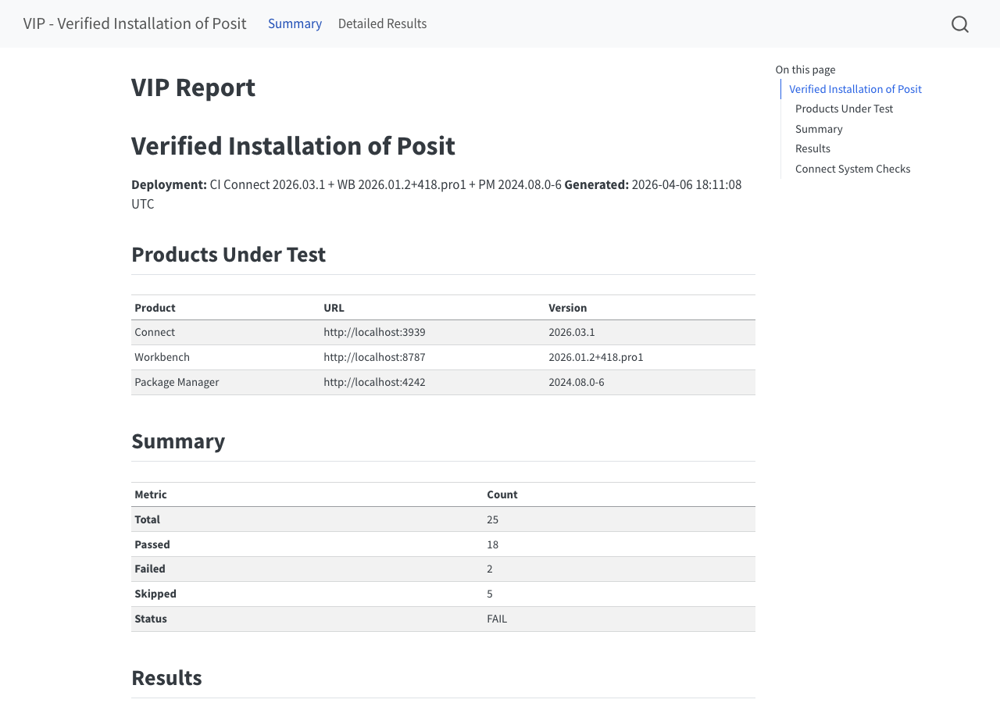

A dive into the architecture and infrastructure of the new CLI
2026-07-14
A customer finishes deploying Posit Team and asks:
Is it actually working?
A test suite that runs against live Posit Team deployments.
vip cleanupInstall and run:
Scope to the checks you care about:
Example of a generated validation report

Cross-Cutting Security · Prerequisites · Performance
VIP is built on BDD, behavior-driven development. You write what the system should do in plain language, then bind each line to code that checks it.
That plain language is called Gherkin. Every scenario is Given / When / Then:
Given a starting condition
When an action happens
Then the expected result is trueVIP’s actual check that Connect’s embedded Chronicle collector is running:
@connect @if_applicable @api_auth
Feature: Connect embedded Chronicle
As a Posit Team administrator
I want to verify Connect's embedded Chronicle subprocess is running
So that I know usage data collection came up after enabling it
Scenario: Chronicle reports enabled and ready
Given Connect is accessible at the configured URL
And Chronicle usage data collection is enabled
When I query the Chronicle status endpoint
Then Chronicle reports it is enabled
And Chronicle reports it is readypytest
pytest-bdd
httpx
Playwright
Three rules constrain every test in the suite.
_vip_test..feature file is the spec.Each layer talks only to the one directly below it.
test_chronicle.feature
test_chronicle.py
connect.py
httpx for APIs, Playwright for UIs.
The Chronicle scenario, exactly as the .feature file states it:
# test_chronicle.feature
@connect
Scenario: Chronicle reports enabled and ready
Given Connect is accessible at the configured URL
And Chronicle usage data collection is enabled
When I query the Chronicle status endpoint
Then Chronicle reports it is enabled
And Chronicle reports it is readyThis step holds no logic of its own. It calls the client method, and target_fixture hands the result to the Then steps that check it.
The client method is the contract: ask a question, get a dict back.
Inside that method, raw httpx touches the wire:
raise_for_status() turns any HTTP error into a failed test. Nothing passes on a bad response.httpx for Playwright, and Layers 1–3 don’t change.The Chronicle endpoint only exists in Connect 2026.06.0 and later. So:
The plugin reads the live product version at collection time and decides whether the test applies.
selftests/ Does VIP itself work? Tests VIP’s own machinery: config parsing, the auto-skip logic, report output. No Posit products needed, so CI runs them on every push.
src/vip_tests/ Does the deployment work? The BDD checks against a real Connect, Workbench, or PM. Per-product smoke workflows stand those up as containers in CI and run the checks.
compose.mock-idp.yml stands up a real stack behind TLS under *.vip.test:
This is the only workflow that drives VIP’s OIDC auth (auth.py, idp.py) end-to-end against a real identity provider. No customer IdP required.
vip verify, not pytest. It tests the front door.--headless-auth reads a seeded TOTP secret and clears Keycloak’s MFA on its own.Generate a working example with vip scaffold, then edit the pair. The .feature says what to check; the .py binds each line to code:
Scenario: Example custom health check
When I request the custom endpoint
Then it responds successfullyPoint VIP at your own directory. No fork, no PR:
extension_dirs check in your own repo.